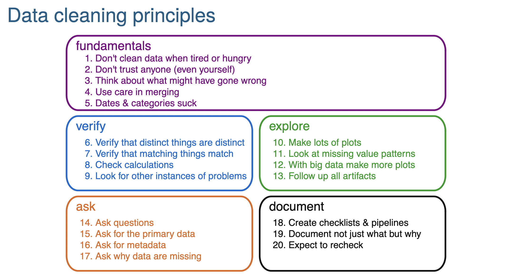
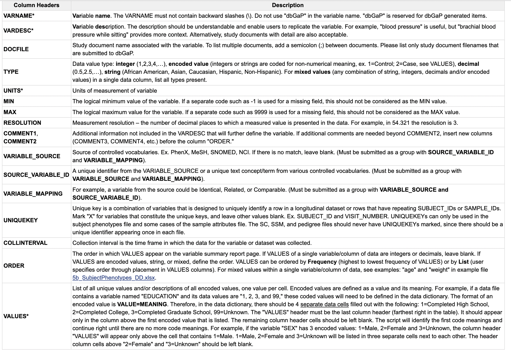

suppressMessages(library(tidyverse))
library(dbGaPCheckup)
## Load DD.dict.I and DS.data.I
data(ExampleI)25 Data Quality Checking
25.1 Data cleaning principles
Data cleaning principles from Karl Broman’s slide set:
https://kbroman.org/Talk_DataCleaning/data_cleaning.pdf

25.2 dbGaP quality control
As described in:
Tryka KA, Hao L, Sturcke A, Jin Y, Wang ZY, Ziyabari L, Lee M, Popova N, Sharopova N, Kimura M, Feolo M. NCBI’s Database of Genotypes and Phenotypes: dbGaP. Nucleic Acids Research. 2014 Jan 1;42(D1):D975–D979. PMID: 24297256 PMCID: PMC3965052 DOI: https://doi.org/10.1093/nar/gkt1211
“The Database of Genotypes and Phenotypes (dbGap, http://www.ncbi.nlm.nih.gov/gap) is a National Institutes of Health-sponsored repository charged to archive, curate and distribute information produced by studies investigating the interaction of genotype and phenotype.”
Under NIH data sharing guidelines, all properly consented large-scale genetic or ’omics studies must deposit their data in dbGaP. To so, one must closely follow the formatting requirements as described in the dbGaP Submission Guide:
https://www.ncbi.nlm.nih.gov/gap/docs/submissionguide/
This involves setting up a data dictionary that follows dbGaP specifications:

25.3 Minimum and Maximum Values Check
25.3.1 MIN, MAX check
In the data dictionary, for some variables, MIN and MAX values may be specified. For example, for age, it has a natural minimum of zero.
MIN The logical minimum value of the variable. If a separate code such as -1 is used for a missing field, this should not be considered as the MIN value.
MAX The logical maximum value for the variable. If a separate code such as 9999 is used for a missing field, this should not be considered as the MAX value.Task: Design and implement a check that the specified MIN and MAX values observed in the data are consistent with the values as specified in the data dictionary.
Using DD.dict.I and DS.data.I, check the PERCEIVED_CONFLICT variable to see if all the values fall within the stated MIN and MAX values.
DD.dict.I %>%
filter(VARNAME=="PERCEIVED_CONFLICT") %>%
select(VARNAME,MIN,MAX)# A tibble: 1 × 3
VARNAME MIN MAX
<chr> <dbl> <dbl>
1 PERCEIVED_CONFLICT 1 1525.3.2 Pseudo-code
Hint
First try to write out an algorithm for this Minimum and Maximum Values Check in pseuo-code, outlining each step.
Expand to see solution
Possible steps:
- Read the vector of
PERCEIVED_CONFLICTfromDS.data.I - Read the
MINandMAXvalues forPERCEIVED_CONFLICTfromDD.dict.I - Count and list any
PERCEIVED_CONFLICTvalues that lie outside of the range [MIN, …,MAX].
25.3.3 Implement MIN, MAX check in R
Implement your algorithm in code.
Expand to see solution
# Read the vector of `PERCEIVED_CONFLICT` from `DS.data.I`
trait <- DS.data.I$PERCEIVED_CONFLICT
# Read the `MIN` and `MAX` values for `PERCEIVED_CONFLICT` from `DD.dict.I`
min.val <- DD.dict.I %>%
filter(VARNAME=="PERCEIVED_CONFLICT") %>%
pull(MIN)
max.val <- DD.dict.I %>%
filter(VARNAME=="PERCEIVED_CONFLICT") %>%
pull(MAX)
# List any `PERCEIVED_CONFLICT` values that lie outside of the range [`MIN`, ..., `MAX`].
trait[trait < min.val | trait > max.val] %>%
unique() %>%
sort() [1] 16 17 19 20 21 24 25 26 28 29 30# Count any `PERCEIVED_CONFLICT` values that lie outside of the range [`MIN`, ..., `MAX`].
trait[trait < min.val | trait > max.val] %>%
length()[1] 44These results are consistent with those returned by the minmax_check function from the dbGaPCheckup R package:
details <- minmax_check(DD.dict.I, DS.data.I, non.NA.missing.codes=c(-9999, -4444))$Information$Message
[1] "ERROR: some variables have values outside of the MIN to MAX range."
$Information
# A tibble: 1 × 5
Trait Check ListedMin ListedMax OutOfRangeValues
<chr> <lgl> <dbl> <dbl> <list>
1 PERCEIVED_CONFLICT FALSE 1 15 <int [11]> details[[1]]$OutOfRangeValues[[1]] %>%
sort() [1] 16 17 19 20 21 24 25 26 28 29 3025.3.4 Make your check more robust
After implementing your algorithm in R code, think about it a bit further - is it robust to the situation where only one of the MIN and MAX values is specified and the other is missing? Is it robust to the situation where both MIN and MAX are missing?
Expand to see solution
# List any `PERCEIVED_CONFLICT` values that lie outside of the range [`MIN`, ..., `MAX`].
trait[trait < min.val | trait > max.val] %>%
unique() %>%
sort() [1] 16 17 19 20 21 24 25 26 28 29 30The code proposed here is not robust to MIN or MAX being NA because, for example, if MIN is NA and MAX is 15, in some situations the logical indexing into the trait vector used of trait < min.val | trait > max.val would return NA instead of TRUE or FALSE as intended.
# MIN=NA, MAX=15
16 < NA | 16 > 15[1] TRUE# MIN=1, MAX=NA
16 < 1 | 16 > NA[1] NA# MIN=NA, MAX=NA
16 < NA | 16 > NA[1] NAThis are possible steps toward writing a more robust check:
vals.low <- NA
vals.high <- NA
if (!is.na(min.val)) {
vals.low <- trait[trait < min.val]
}
if (!is.na(max.val)) {
vals.high <- trait[trait > max.val]
}
vals.OutOfRange <- c(vals.low,vals.high)
vals.OutOfRange %>%
na.omit() %>%
unique() %>%
sort() [1] 16 17 19 20 21 24 25 26 28 29 30But what would the above code return if both MIN and MAX were NA?
25.3.5 Check the PREGNANT variable
Now apply your MIN and MAX checking algorithm to the PREGNANT variable.
DD.dict.I %>%
filter(VARNAME=="PREGNANT") %>%
select(VARNAME,MIN,MAX)# A tibble: 1 × 3
VARNAME MIN MAX
<chr> <dbl> <dbl>
1 PREGNANT 0 1
Expand to see solution
# Read the vector of `PREGNANT` from `DS.data.I`
trait <- DS.data.I$PREGNANT
# Read the `MIN` and `MAX` values for `PREGNANT` from `DD.dict.I`
min.val <- DD.dict.I %>%
filter(VARNAME=="PREGNANT") %>%
pull(MIN)
max.val <- DD.dict.I %>%
filter(VARNAME=="PREGNANT") %>%
pull(MAX)
# List any `PREGNANT` values that lie outside of the range [`MIN`, ..., `MAX`].
trait[trait < min.val | trait > max.val] %>%
unique() %>%
sort()[1] -9999 -4444# Count any `PREGNANT` values that lie outside of the range [`MIN`, ..., `MAX`].
trait[trait < min.val | trait > max.val] %>%
length()[1] 53These out-of-range values of -9999 and -4444 look kind of strange and are unexpected given the first two entries of the VALUES column of the data dictionary for this variable:
DD.dict.I[which(DD.dict.I=="PREGNANT"),c(1,17,18)]# A tibble: 1 × 3
VARNAME VALUES ...18
<chr> <chr> <chr>
1 PREGNANT 0=no 1=yesBased on this, we’d expect to see only 0 and 1 values in the PREGNANT variable.
What’s going on?
25.3.6 Handle missing values
If we further check the data dictionary for the PREGNANT variable, we see that the out-of-range values we observed in our check above are actually missing value codes and so should not be flagged as being out of range.
DD.dict.I[which(DD.dict.I=="PREGNANT"),c(1,19,20)]# A tibble: 1 × 3
VARNAME ...19 ...20
<chr> <chr> <chr>
1 PREGNANT -9999=missing value -4444=not applicable, participant assigned male …Extend your algorithm to handle missing value codes. To do this first outline your approach in pseudo-code.
Expand to see solution
Possible steps:
- Read the vector of
PREGNANTfromDS.data.I - Read the
MINandMAXvalues forPREGNANTfromDD.dict.I - Have the user provide a list of missing value codes
- Recode any
PREGNANTvalue that matches one of the missing value codes to the standardNAR missing value code. - Count and list any non-missing
PREGNANTvalues that lie outside of the range [MIN, …,MAX].
This is essentially the approach used in the minmax_check function of the dbGaPCheckup R package.
# Without missing value codes specified
details <- minmax_check(DD.dict.I, DS.data.I)$Information$Message
[1] "ERROR: some variables have values outside of the MIN to MAX range."
$Information
# A tibble: 2 × 5
Trait Check ListedMin ListedMax OutOfRangeValues
<chr> <lgl> <dbl> <dbl> <list>
1 PREGNANT FALSE 0 1 <int [2]>
2 PERCEIVED_CONFLICT FALSE 1 15 <int [11]> details[[1]]$OutOfRangeValues[[1]]
[1] -4444 -9999
[[2]]
[1] 25 24 16 28 17 21 30 19 26 20 29# With missing value codes specified
# PREGNANT is no longer flagged as having out of range values.
details <- minmax_check(DD.dict.I, DS.data.I, non.NA.missing.codes=c(-9999, -4444))$Information$Message
[1] "ERROR: some variables have values outside of the MIN to MAX range."
$Information
# A tibble: 1 × 5
Trait Check ListedMin ListedMax OutOfRangeValues
<chr> <lgl> <dbl> <dbl> <list>
1 PERCEIVED_CONFLICT FALSE 1 15 <int [11]> If we examine the minmax_check code by typing minmax_check without parentheses at the R prompt, we see that this is how the missing value recoding step is done:
for (value in na.omit(non.NA.missing.codes)) {
dataset_na <- dataset_na %>% mutate(across(everything(),
~na_if(.x, value)))
}